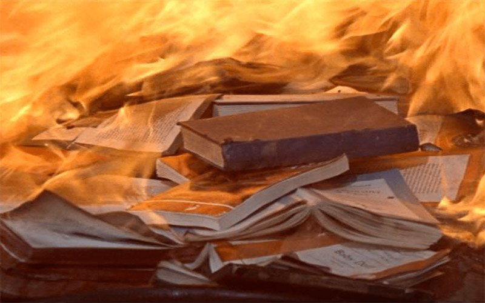

Arquivos recuperados da Zona de Contenção • Natal • 2088
Após a Reorganização Nacional, o Nordeste deixou de ser tratado como uma região do país e passou a ser visto como uma Zona de Contenção.
O governo afirma que essa medida garante estabilidade, segurança e progresso.
Entretanto, bibliotecas foram fechadas, professores desapareceram e a filosofia foi removida das escolas.
Em 2088, pensar profundamente tornou-se perigoso.
Durante os séculos XVII e XVIII, diversos filósofos passaram a questionar governos que concentravam poder e limitavam o acesso ao conhecimento.
Esse movimento ficou conhecido como Iluminismo.
Os iluministas acreditavam que a razão deveria orientar a sociedade e defendiam a liberdade de pensamento, de expressão e de investigação.
Seu lema era simples: ninguém deve aceitar uma ideia sem questioná-la.
O Diretório afirma que livros antigos representam risco para a estabilidade social.
Porém, ao longo da história, governantes sempre tentaram controlar o conhecimento quando sentiram seu poder ameaçado.
Os livros não eram perigosos.
Perigosas eram as perguntas que eles despertavam.

| Iluminismo | Brasil de 2088 |
|---|---|
| Monarquias concentram poder | Diretório concentra poder |
| Livros sofrem censura | Livros são destruídos |
| Filósofos questionam autoridades | Nós questionamos o regime |
| Conhecimento é limitado | Informação é controlada |
| Ideias circulam clandestinamente | Arquivos circulam clandestinamente |
| Razão é incentivada | Razão é considerada perigosa |
Os iluministas compreenderam que a ignorância fortalece governos autoritários.
O Diretório compreende exatamente a mesma coisa.
Por isso as notícias são controladas. Por isso as escolas são monitoradas. Por isso as informações são simplificadas.
O objetivo não é ensinar. O objetivo é impedir reflexões profundas.
Decisões devem ser tomadas através de argumentos, evidências e reflexão.
Toda pessoa deve possuir o direito de expressar suas ideias sem censura.
Nenhum cidadão deve ser tratado como inferior por sua origem ou condição.
A educação deve estar acessível a toda a população.
O Diretório acredita que apagou nossa memória.
Mas a memória sobrevive em livros escondidos, professores esquecidos e estudantes que ainda fazem perguntas.
Os iluministas enfrentaram a censura. Nós enfrentamos a vigilância.
Eles espalharam conhecimento através dos livros. Nós espalhamos conhecimento através da memória.
A luta mudou. Mas a ideia continua a mesma.
Nenhuma sociedade será verdadeiramente livre enquanto pensar for considerado perigoso.